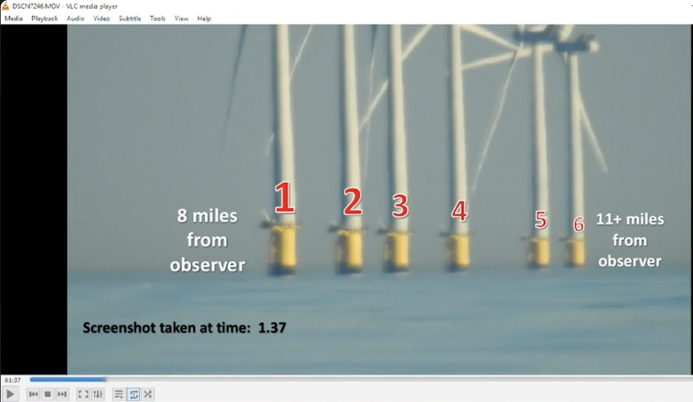
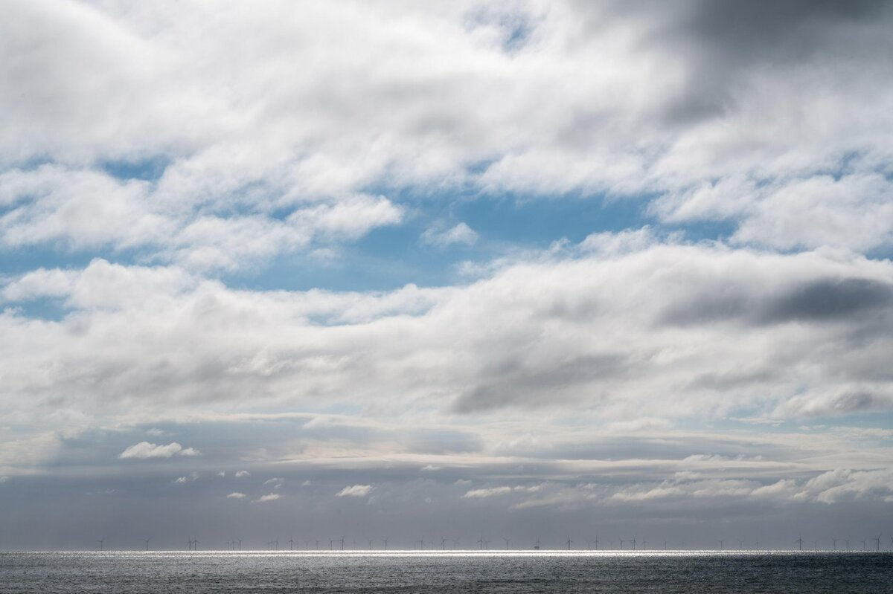
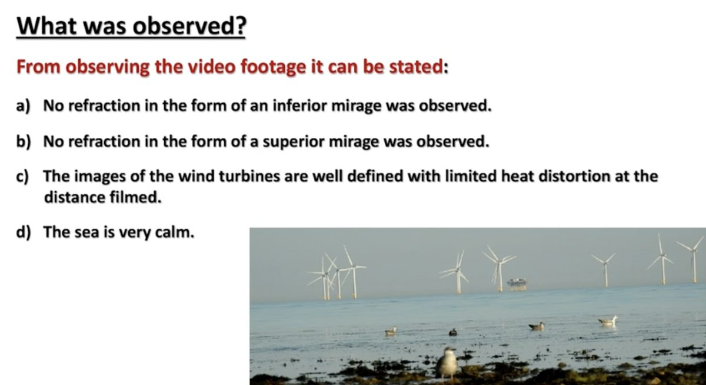
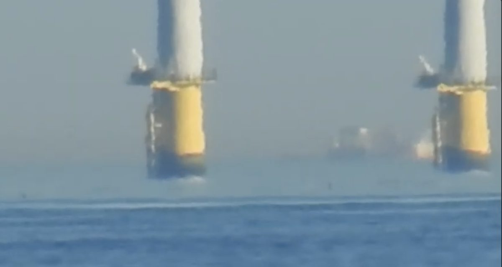
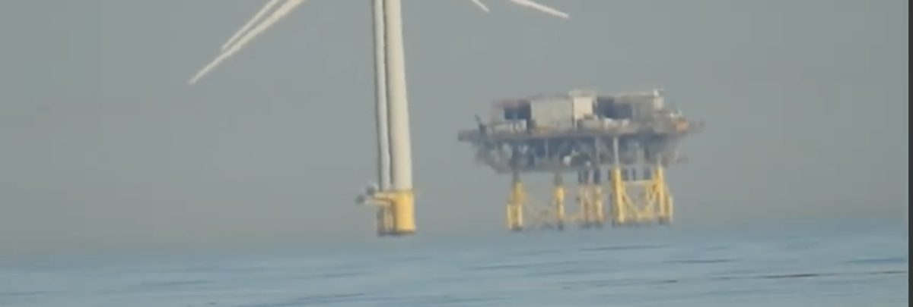
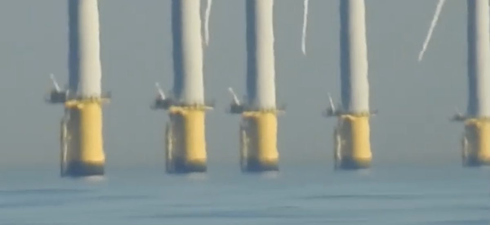

Fun With Science / Globe Deconstruction / The Black Swan
Visible turbine bases at the Rampion Wind Farm, and what they actually show.
A widely-shared flat-earth video, The Black Swan, films the Rampion Wind Farm from Worthing Beach and argues that visible turbine bases and distant ships — which spherical geometry says should be partly hidden — disprove Earth's curvature. It is a careful, well-produced piece, and that is exactly why it deserves a careful answer rather than a dismissal. The short version: the footage was shot on a strong temperature-inversion day, its own frames record the refraction it claims is absent, and its one novel optics argument rests on a rule about mirages that is false — a rule contradicted by the two scientists the video itself cites.
Curvature intactClaim does not follow
What the video actually establishes
It establishes that distant structures and a strongly-refracted horizon were photographed under calm coastal conditions on, in the filmmaker's own words, “the clearest and calmest day I had ever witnessed.” It does not establish the location of the true geometric horizon, the vertical temperature profile along the sightline, or the refractive mapping of each object — the quantities you would actually need to turn footage into a geometric test. Its conclusion (“impossible on a globe”) is drawn against an airless globe, using vacuum geometry on a day its own imagery shows to be anything but.
The video defines a “Black Swan” as any observation in which the sea-sky horizon appears behind an object that sits beyond the calculated geometric horizon. From Worthing Beach, with a Nikon P900 held about 2–3.5 ft above the tide, it films six Rampion turbines at 8–11 miles, the substation, and three ships out to ~21 miles. Using an Earth radius of 3,959 miles it computes the “hidden height” that curvature should bury at each range, then shows the bases, legs and hulls apparently meeting the sea anyway.


Crucially, the video does not stop at “you can see too much.” It anticipates the refraction rebuttal and tries to close it with an optics argument: that any mirage — inferior or superior — requires the observer to see the real object by a direct, straight, unobstructed ray, plus a bent ray for the inverted image. Since a globe hides the real ship behind the curve, there is no straight ray to it; therefore, it argues, the observed “erect ship with an inverted image above it” is impossible on a globe, and only a flat plane can produce it. That is a real argument. It fails at one specific, identifiable step.
The whole case rests on equating “the erect image” with “a direct straight-line view of the real object.” Under a temperature inversion those are not the same thing. Light travels along continuously curved paths, and the orientation of an image — erect or inverted — is set by whether the mapping from an object point's true height to its apparent height has a positive or negative slope, not by whether the ray happens to be bending downward as it reaches the eye.
A single inversion layer generically produces a stack of images. The lowest, erect image can be a loomed view of an object that lies below the geometric horizon and has no straight-line path to the eye at all; above it sits the inverted image. “Erect object with an inverted image above it, both about the same size” is the signature of a long-range superior mirage — not a refutation of one. The video's step “a downward-bending ray must give an inverted image, so two curved rays give two inverted images” is the false move: erectness flips across the ray-path fold, so the same curved fan delivers an erect image and an inverted one. No straight ray to the real ship is required at any point.
The video is emphatic, and correct, on one point: you do not get to invent your own optics. It repeatedly insists the analysis obeys “the known and accepted laws and principles of light.” Good. Then apply them — and apply the two atmospheric-optics scientists the video names in its own sources.
“A superior mirage requires a direct straight ray to the real object” is the invented law here. It appears in neither man's work.
Walter Lehn spent a career ray-tracing exactly these events. His “Long-range superior mirages” (Applied Optics, 1998) models superior mirages that lift ships and coastlines far beyond the geometric horizon into view; his 1983 paper works the problem backwards, reconstructing the temperature profile from the mirage itself. In both, the real object is hidden below the horizon and is imaged by continuous curved rays — often as several images, erect and inverted. That is the mechanism the video calls impossible.
Robert Greenler — author of the standard popular text Rainbows, Halos, and Glories — did it in a tank. His “Laboratory simulation of inferior and superior mirages” (1987) reproduces both mirage types from a smooth density gradient, generating erect and inverted images with no straight ray anywhere in the apparatus.
So by the video's own standard — obey the known laws, cite the authorities — its central premise fails. Lehn and Greenler describe curved-ray, multi-image mirages of hidden objects. The video's “one straight ray plus one bent ray” rule is the thing that isn't in the physics. It picked the referees, and the referees rule against it.
The video's summary slide asserts four things: no inferior mirage, no superior mirage, images “well-defined with limited heat distortion,” and a very calm sea. The frames beside it show otherwise — and the film-maker expressly invites viewers to grab the screenshots and check. So we did.




The mirage explanation above doesn't rest only on what the video's own frames happen to show. This particular stretch of English coast — sheltered, shallow, and prone to a cool sea sitting under a warm, still summer air mass — is independently and repeatedly documented producing this exact effect, under the exact weather the film-maker himself singles out as ideal: calm, clear, and hot.
The common thread across all three is the same recipe the video's presenter describes approvingly as the best possible filming conditions: a calm sea, little or no wind, and “the clearest and calmest day I had ever witnessed.” That is precisely the setup — a still, sun-warmed air layer sitting over cooler Channel or North Sea water — that produces a temperature inversion. Calm and clear is not evidence against refraction on this coastline; historically, on this coastline, it is the recipe for it. The mirage explanation here isn't an ad hoc rescue invented for this one video — it's the same well-known, well-photographed effect this stretch of coast has been independently famous for since before photography existed.
To be fair: the video's geometry is essentially correct. Its no-refraction hidden-height figures check out.
| Target | Distance | Observer height | Hidden height (no refraction) |
|---|---|---|---|
| Nearest turbines | 8 miles | 2 ft | ~26 ft (8 m) |
| Shetland Trader | 13.9 miles | 3.5 ft | ~90 ft (27 m) |
| Eagle Kinabalu | 20.8 miles | 3.5 ft | ~228 ft (70 m) |
These reproduce the video's own figures and are arithmetically fine — for a vacuum. They are the hidden heights on a globe with no atmosphere.
That is the whole problem. The real physical prediction is Earth geometry plus the day's refractive-index field — and the video never measures or applies it. Even a standard atmosphere (refraction coefficient k ≈ 0.13) already trims those hidden heights by ~13–15%. A looming or ducting day pushes k far higher; a visible superior mirage — which the video itself diagnoses on the Shetland Trader — corresponds to refraction strong enough (k > 1 in the affected layer) to lift the lower parts of distant objects fully into view. The 8 m of hidden turbine base at 8 miles is trivially loomed away; the tens of metres on the far ships are exactly what strong ducting over cold water does — and it is why the film-maker quietly hedges (“your call”) on those very frames.
Put simply: a “Black Swan” measured against a no-refraction globe, on a day with a documented superior mirage, is measured against the wrong prediction.
There is a number in the chapter that has not been used against it, and it is the chapter's own. Miller anticipates an objection about the dark band at the waterline, and answers it:
“Debunkers that never took an art class will point out that the dark part is ⅓ of the height at support 6 compared to turbine #1. This is due to perspective. As objects move away, they get smaller.”
— Levi Miller, Globe Deconstruction, p. 95 (review draft)
Perspective is real and it does shrink things. The question is by how much, and that is arithmetic rather than art. Turbine #1 sits at 8.0 miles and support 6 at 11.0 — the distances from his own p. 92 table; the p. 94 slide gives 8.4 and 11.2, which changes nothing — so anything of fixed physical height at the further one subtends
8.0 ÷ 11.0 = 0.73 of its angular height at the nearer one (8.4÷11.2 = 0.75)
Perspective predicts the far band should be about three-quarters as tall. He reports one-third. On his own figure, perspective accounts for roughly half of the reduction and something else has removed the rest — and that something else grows with distance.
Stated carefully, because it should not be oversold: the ⅓ is his own visual estimate from the footage rather than a photogrammetric measurement, and a careful redo might move it. But it is his estimate, offered in support of his case, and taken at face value it points the other way. Measuring that ratio properly off the original frames — band height in pixels at turbine 1 against support 6, scaled by the known distances — is a better experiment than anything else in the chapter, and anybody holding the footage can run it this afternoon.
You cannot run no-refraction geometry and a superior mirage on the same footage. Once a superior mirage is present — as the video concedes — the atmosphere is bending light, and the same bending that lifts the inverted image lifts the hidden bases and hulls into view.
This is the part the video skips, and the part that separates an observation from a proof. Geometry does not change from day to day; the atmosphere does. So there is a clean, pre-registerable test:
A second, even simpler test needs only one day: change your eye height. Walk up onto the promenade or higher ground and film again. On a globe the buried bases climb back into view as the observer rises; on a flat plane the view is height-independent. That dependence on observer height cannot be faked with a flat sea — and it is precisely the variable the “stand at the water's edge” framing avoids.
The footage is real, and on a strong-inversion day the looming genuinely is striking — that is why the video persuades. But “striking” is not “impossible.” The film records a documented superior-mirage day, shows the refraction in its own frames, measures hidden height to the top of a mirage band, applies airless-globe geometry to a very airy sky, and rests its optics on a rule its own cited scientists refute. Concede the images; the interpretation is where it breaks.